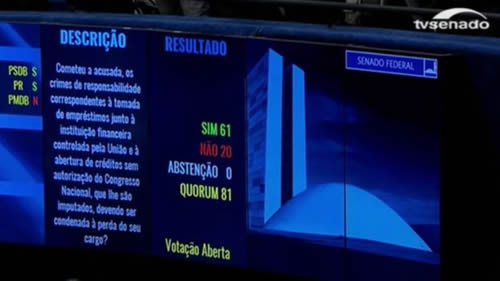

Real Chubut - Agencia de Noticias


Dilma Rousseff es destituida como presidenta de Brasil
Ocho meses y 17 días después de su inicio, el proceso de impeachment contra Dilma Rousseff llegó este miércoles a su desenlace.
Alrededor de las 13:30 hora local (16:30 GMT), 61 senadores votaron a favor de retirar a la presidenta de su cargo de manera definitiva. 20 rechazaron la medida y no hubo abstenciones.
Para recuperar su cargo, del que fue apartada temporalmente en mayo, Rousseff necesitaba el apoyo de al menos dos tercios de la cámara, 54 senadores.
Las frases más destacadas de la defensa de 14 horas de Dilma Rousseff
La presidenta del gigante latinoamericano fue apartada así de la función a la que que llegó tras las elecciones presidenciales de 2011 y para la que fue reelegida en 2014.
Atrás quedan cinco años de gobierno de quien fue la primera mujer en presidir Brasil, una figura con una larga trayectoria política que se inició con su militancia guerrillera contra el gobierno militar, primero en su Belo Horizonte natal y después en Río de Janeiro y Sao Paulo.
Tras su paso por prisión en 1970, donde fue torturada, y tras la caída del gobierno de facto, Rousseff continuó su activismo político, que la llevó a convertirse en una figura clave del gobierno de Luiz Inácio Lula da Silva, primer presidente del Partido dos Trabalhadores (PT).
Lula se convirtió en su mentor político, la designó como su sucesora y la aupó como candidata presidencial en 2011.
Ahora, con la salida de Rousseff de la presidencia, también se pone fin al periodo de 13 años de gobiernos del PT que comenzó con Lula da Silva en 2003.
Temer, presidente hasta 2018
El relevo lo toma Michel Temer, quien ya había sustituido a Rousseff como presidente desde su suspensión en mayo, y permanecerá a cargo del gobierno brasileño hasta finales de 2018.
Antes de eso, Temer, líder del Partido del Movimiento Democrático Brasileño, de centro derecha, era vicepresidente del gobierno en la coalición que llevó a Rousseff a la presidencia.
El PMDB es, por número de diputados y senadores, el partido más grande de Brasil. Pese a ello, no ha tenido candidato propio a la presidencia desde 1994, lo que no ha evitado que sea el partido que más presencia ha tenido en el gobierno federal desde el regreso de la democracia a Brasil hace 30 años.
La defensa de Rousseff
Con la votación del Senado de este miércoles se culminó el proceso de investigación sobre la presunta manipulación de los presupuestos del gobierno brasileño.
El pedido de impeachment a la presidenta llegó al Congreso en octubre del año pasado. Los adversarios de Rousseff acusan a su gobierno de tomar préstamos de bancos estatales sin consultar al parlamento para tapar agujeros en las cuentas públicas.
El juicio sobre el impeachment comenzó el jueves pasado, cuando se empezaron a escuchar en el Senado los testimonios a favor y en contra de la presidenta.
Rousseff negó en todo momento los hechos de los que se le responsabiliza y su defensa señaló que tales acusaciones no son suficientes para tomar una medida tan drástica como apartar un presidente de la república
El lunes, en una defensa que duró 13 horas, Rousseff pronunció un discurso en el que calificaba al impeachment como un "golpe contra la democracia".
"Como todos, tengo defectos. Pero entre mis defectos no están la deslealtad y la cobardía. No traiciono los compromisos que asumo", aseguró.
"No lucho por mi mandato por vanidad o apego al poder, lucho por la democracia y por el bienestar del pueblo", agregó.

Fin del impeachmentSin embargo, ni el emotivo discurso de la presidenta, ni el de su abogado defensor cambiaron el sentido del voto de la cámara.
Ahora, el presidente del Tribunal Supremo Federal, Ricardo Lewandowski, redactará la sentencia y la publicará en el Diario Oficial.
Rousseff recibirá la notificación oficial y el proceso concluirá.
"Se trata de un juicio sobre responsabilidades políticas, no penales, de modo que Rousseff no puede ser juzgada por esta cuestión en un tribunal", apunta Pablo Uchoa, periodista de BBC Brasil.
Como telón de fondo del proceso de impeachment queda la investigación "Lava Jato" (lavado de autos) sobre presuntos sobornos que, según la Fiscalía, ayudaron a financiar campañas del PT y sus socios de gobierno y que puso en cuestión a la clase política brasileña en general.
Aunque algunos miembros de su partido, incluido Lula da Silva, se vieron afectados por ese escándalo, Rousseff -que facilitó la investigación desde la presidencia- nunca ha sido acusada de enriquecimiento ilícito.